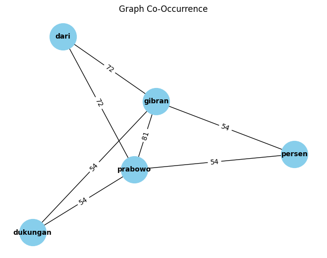

Ekstraksi Keywords Berita Online#
Import Data
import pandas as pd
df = pd.read_csv('/content/drive/MyDrive/projectPPW/tugas/radarjatim_fix.csv')
df
| Judul | Content | Category | |
|---|---|---|---|
| 0 | Elektabilitas Prabowo – Gibran Makin Kuat, Din... | SURABAYA (RadarJatim.id) Lembaga survei Populi... | Nasional |
| 1 | Perbesar Kemenangan, Infrastruktur TKN Prabowo... | SURABAYA (RadarJatim.id) Calon Presiden (capre... | Nasional |
| 2 | Rekam Jejak Gemilang, Prabowo – Gibran Duet Pe... | SURABAYA (RadarJatim.id) Calon Presiden (capre... | Nasional |
| 3 | Tanpa Basa-Basa Aksi Nyata Prabowo Terima Pulu... | SURABAYA (RadarJatim.id) Menteri Pertahanan (M... | Nasional |
| 4 | Dukungan Kuat Khofifah Buka Lebar Jalan Prabow... | SURABAYA (RadarJatim.id) Dukungan Gubernur Jaw... | Nasional |
| ... | ... | ... | ... |
| 258 | Terima Pengaduan Status Tanah, Wawali Armuji G... | SURABAYA (RadarJatim.id) Wakil Wali Kota Surab... | Hukum dan Kriminal |
| 259 | Hunian Rutan Surabaya Meningkat Hingga 150 Persen | SIDOARJO (RadarJatim.id) – Penataan ulang Ruta... | Hukum dan Kriminal |
| 260 | KPK Lelang 14 Barang Eks Gratifikasi di Road t... | SURABAYA (RadarJatim.id) Komisi Pemberantasan ... | Hukum dan Kriminal |
| 261 | Lapas Madiun Gagalkan Penyelundupan Narkoba | SURABAYA (RadarJatim.id) – Jajaran Kanwil Keme... | Hukum dan Kriminal |
| 262 | Jaringan Narkoba Internasional diringkus di Su... | SURABAYA (RadarJatim.id) — Satresnarkoba Polre... | Hukum dan Kriminal |
263 rows × 3 columns
Pre-Processing
Cek Data Kosong & Duplikat
df.isnull().sum()
Judul 0
Content 0
Category 0
dtype: int64
df.duplicated().sum()
0
Cleansing Data
import re, string
# Text Cleaning
def cleaning(text):
# Menghapus tag HTML
text = re.compile('<.*?>|&([a-z0-9]+|#[0-9]{1,6}|#x[0-9a-f]{1,6});').sub('', str(text))
# Mengubah seluruh teks menjadi huruf kecil
text = text.lower()
# Menghapus spasi pada teks
text = text.strip()
# Menghapus Tanda Baca, karakter spesial, and spasi ganda
text = re.compile('<.*?>').sub('', text)
text = re.compile('[%s]' % re.escape(string.punctuation)).sub(' ', text)
text = re.sub('\s+', ' ', text)
text = re.sub("â½ïgoal", "", text)
text = re.sub("SCROLL TO CONTINUE WITH CONTENT", "", text)
text = re.sub(r'[^a-zA-Z\s]', '', text)
# Menghapus Nomor
text = re.sub(r'\[[0-9]*\]', ' ', text)
text = re.sub(r'[^\w\s]', '', str(text).lower().strip())
text = re.sub(r'\d', ' ', text)
text = re.sub(r'\s+', ' ', text)
# Mengubah text yang berisi 'nan' dengan whitespace agar nantinya dapat dihapus
text = re.sub('nan', '', text)
return text
df['Content'] = df['Content'].apply(lambda x: cleaning(x))
df
| Judul | Content | Category | |
|---|---|---|---|
| 0 | Elektabilitas Prabowo – Gibran Makin Kuat, Din... | surabaya radarjatim id lembaga survei populi c... | Nasional |
| 1 | Perbesar Kemenangan, Infrastruktur TKN Prabowo... | surabaya radarjatim id calon presiden capres p... | Nasional |
| 2 | Rekam Jejak Gemilang, Prabowo – Gibran Duet Pe... | surabaya radarjatim id calon presiden capres p... | Nasional |
| 3 | Tanpa Basa-Basa Aksi Nyata Prabowo Terima Pulu... | surabaya radarjatim id menteri pertaha menhan ... | Nasional |
| 4 | Dukungan Kuat Khofifah Buka Lebar Jalan Prabow... | surabaya radarjatim id dukungan gubernur jawa ... | Nasional |
| ... | ... | ... | ... |
| 258 | Terima Pengaduan Status Tanah, Wawali Armuji G... | surabaya radarjatim id wakil wali kota surabay... | Hukum dan Kriminal |
| 259 | Hunian Rutan Surabaya Meningkat Hingga 150 Persen | sidoarjo radarjatim id penataan ulang rutan i ... | Hukum dan Kriminal |
| 260 | KPK Lelang 14 Barang Eks Gratifikasi di Road t... | surabaya radarjatim id komisi pemberantasan ko... | Hukum dan Kriminal |
| 261 | Lapas Madiun Gagalkan Penyelundupan Narkoba | surabaya radarjatim id jajaran kanwil kemenkum... | Hukum dan Kriminal |
| 262 | Jaringan Narkoba Internasional diringkus di Su... | surabaya radarjatim id satresnarkoba polrestab... | Hukum dan Kriminal |
263 rows × 3 columns
Tokenisasi Data
import nltk
from nltk.tokenize import sent_tokenize
nltk.download('punkt')
[nltk_data] Downloading package punkt to /root/nltk_data...
[nltk_data] Unzipping tokenizers/punkt.zip.
True
df["Tokenizing_Content"] = df['Content'].apply(sent_tokenize)
df.head()
| Judul | Content | Category | Tokenizing_Content | |
|---|---|---|---|---|
| 0 | Elektabilitas Prabowo – Gibran Makin Kuat, Din... | surabaya radarjatim id lembaga survei populi c... | Nasional | [surabaya radarjatim id lembaga survei populi ... |
| 1 | Perbesar Kemenangan, Infrastruktur TKN Prabowo... | surabaya radarjatim id calon presiden capres p... | Nasional | [surabaya radarjatim id calon presiden capres ... |
| 2 | Rekam Jejak Gemilang, Prabowo – Gibran Duet Pe... | surabaya radarjatim id calon presiden capres p... | Nasional | [surabaya radarjatim id calon presiden capres ... |
| 3 | Tanpa Basa-Basa Aksi Nyata Prabowo Terima Pulu... | surabaya radarjatim id menteri pertaha menhan ... | Nasional | [surabaya radarjatim id menteri pertaha menhan... |
| 4 | Dukungan Kuat Khofifah Buka Lebar Jalan Prabow... | surabaya radarjatim id dukungan gubernur jawa ... | Nasional | [surabaya radarjatim id dukungan gubernur jawa... |
StopWords Data
nltk.download('stopwords')
[nltk_data] Downloading package stopwords to /root/nltk_data...
[nltk_data] Unzipping corpora/stopwords.zip.
True
from nltk.corpus import stopwords
from itertools import chain
stop_words = set(chain(stopwords.words('indonesian')))
df['Tokenizing_Content'] = df['Tokenizing_Content'].apply(lambda x: [w for w in x if not w in stop_words])
df['Content'] = df['Tokenizing_Content'].apply(lambda tokens: ' '.join(tokens))
df.head()
| Judul | Content | Category | Tokenizing_Content | |
|---|---|---|---|---|
| 0 | Elektabilitas Prabowo – Gibran Makin Kuat, Din... | surabaya radarjatim id lembaga survei populi c... | Nasional | [surabaya radarjatim id lembaga survei populi ... |
| 1 | Perbesar Kemenangan, Infrastruktur TKN Prabowo... | surabaya radarjatim id calon presiden capres p... | Nasional | [surabaya radarjatim id calon presiden capres ... |
| 2 | Rekam Jejak Gemilang, Prabowo – Gibran Duet Pe... | surabaya radarjatim id calon presiden capres p... | Nasional | [surabaya radarjatim id calon presiden capres ... |
| 3 | Tanpa Basa-Basa Aksi Nyata Prabowo Terima Pulu... | surabaya radarjatim id menteri pertaha menhan ... | Nasional | [surabaya radarjatim id menteri pertaha menhan... |
| 4 | Dukungan Kuat Khofifah Buka Lebar Jalan Prabow... | surabaya radarjatim id dukungan gubernur jawa ... | Nasional | [surabaya radarjatim id dukungan gubernur jawa... |
Co-Occurency Matriks
df['Content'][0]
'surabaya radarjatim id lembaga survei populi center baru saja merilis hasil jajak pendapatnya yang menunjukan calon presiden capres prabowo subianto dan calon wakil presiden cawapres gibran rakabuming raka sebagai pasangan terkuat tingginya raihan elektabilitas keduanya berkat personalitas dan gelombang dukungan kuat dari berbagai kalangan hasil survei populi center periode oktober hingga november mencatatkan prabowo gibran mendapat elektabilitas sebesar persen unggul dari ganjar pranowo mahfud md dengan persen dan anies baswedan muhaimin iskandar persen direktur executive partner politics indonesia ab solissa mengatakan besarnya elektabilitas prabowo gibran tak lepas dari banyaknya dukungan dari masyarakat akar rumput dengan modal tersebut sangat wajar jika hasil survei menunjukan elektabilitas keduanya sangat besar dan kuat besarnya dukungan terhadap pasangan prabowo gibran juga tak lepas dari faktor personalitas dan dukungan politik yang besar kata solissa selain itu formasi koalisi indonesia maju kim yang dihuni partai politik besar juga menjadi faktor penting dalam bertumbuhnya elektabilitas prabowo gibran bahkan dukungan dari masyarakat garis bawah juga saat ini sudah mulai mengarah kepada sosok prabowo gibran lebih lanjut dia menyebutkan prabowo gibran berhasil membangun citra positif di tengah masyarakat selain itu citra keduanya sangat bagus di mata elite elite politik banyak dari partai politik maupun institusi publik lainnya termasuk dukungan dari masyarakat bawah yang ikut serta memegkan prabowo gibran di pilpres ucapnya sementara itu survei populi juga menemukan adanya potensi prabowo gibran dapat meg dalam satu putaran dengan perolehan sebesar persen sedangkan ganjar mahfud hanya mendapat persen begitu juga anies cak imin dengan persen rj red'
from sklearn.feature_extraction.text import CountVectorizer
vectorizer = CountVectorizer(tokenizer=lambda x: x.split())
X = vectorizer.fit_transform([df['Content'][0]])
co_occurrence_matrix = (X.T * X)
co_occurrence_matrix.setdiag(0)
co_occurrence_df = pd.DataFrame(co_occurrence_matrix.toarray(), columns=vectorizer.get_feature_names_out(),index=vectorizer.get_feature_names_out())
co_occurrence_df
/usr/local/lib/python3.10/dist-packages/sklearn/feature_extraction/text.py:528: UserWarning: The parameter 'token_pattern' will not be used since 'tokenizer' is not None'
warnings.warn(
| ab | adanya | akar | anies | bagus | bahkan | banyak | banyaknya | baru | baswedan | ... | terhadap | terkuat | termasuk | tersebut | tingginya | ucapnya | unggul | wajar | wakil | yang | |
|---|---|---|---|---|---|---|---|---|---|---|---|---|---|---|---|---|---|---|---|---|---|
| ab | 0 | 1 | 1 | 2 | 1 | 1 | 1 | 1 | 1 | 1 | ... | 1 | 1 | 1 | 1 | 1 | 1 | 1 | 1 | 1 | 4 |
| adanya | 1 | 0 | 1 | 2 | 1 | 1 | 1 | 1 | 1 | 1 | ... | 1 | 1 | 1 | 1 | 1 | 1 | 1 | 1 | 1 | 4 |
| akar | 1 | 1 | 0 | 2 | 1 | 1 | 1 | 1 | 1 | 1 | ... | 1 | 1 | 1 | 1 | 1 | 1 | 1 | 1 | 1 | 4 |
| anies | 2 | 2 | 2 | 0 | 2 | 2 | 2 | 2 | 2 | 2 | ... | 2 | 2 | 2 | 2 | 2 | 2 | 2 | 2 | 2 | 8 |
| bagus | 1 | 1 | 1 | 2 | 0 | 1 | 1 | 1 | 1 | 1 | ... | 1 | 1 | 1 | 1 | 1 | 1 | 1 | 1 | 1 | 4 |
| ... | ... | ... | ... | ... | ... | ... | ... | ... | ... | ... | ... | ... | ... | ... | ... | ... | ... | ... | ... | ... | ... |
| ucapnya | 1 | 1 | 1 | 2 | 1 | 1 | 1 | 1 | 1 | 1 | ... | 1 | 1 | 1 | 1 | 1 | 0 | 1 | 1 | 1 | 4 |
| unggul | 1 | 1 | 1 | 2 | 1 | 1 | 1 | 1 | 1 | 1 | ... | 1 | 1 | 1 | 1 | 1 | 1 | 0 | 1 | 1 | 4 |
| wajar | 1 | 1 | 1 | 2 | 1 | 1 | 1 | 1 | 1 | 1 | ... | 1 | 1 | 1 | 1 | 1 | 1 | 1 | 0 | 1 | 4 |
| wakil | 1 | 1 | 1 | 2 | 1 | 1 | 1 | 1 | 1 | 1 | ... | 1 | 1 | 1 | 1 | 1 | 1 | 1 | 1 | 0 | 4 |
| yang | 4 | 4 | 4 | 8 | 4 | 4 | 4 | 4 | 4 | 4 | ... | 4 | 4 | 4 | 4 | 4 | 4 | 4 | 4 | 4 | 0 |
147 rows × 147 columns
Graph Co-occurency
import matplotlib.pyplot as plt
import networkx as nx
from itertools import combinations
G = nx.Graph()
for idx, row in co_occurrence_df.iterrows():
for col in co_occurrence_df.columns:
weight = co_occurrence_df.loc[idx, col]
if weight > 50 and idx != col:
G.add_edge(idx, col, weight=weight)
pos = nx.spring_layout(G)
nx.draw(G, pos, with_labels=True, font_weight='bold', node_color='skyblue', node_size=1500, edge_color='black', linewidths=1, font_size=10)
edge_labels = nx.get_edge_attributes(G, 'weight')
nx.draw_networkx_edge_labels(G, pos, edge_labels=edge_labels)
plt.title('Graph Co-Occurrence')
plt.show()

Closeness Centrality
closeness_centrality = nx.closeness_centrality(G)
print("Closeness Centrality:")
for node, closeness in sorted(closeness_centrality.items(), key=lambda x: x[1], reverse=True):
print(f"{node}: {closeness}")
Closeness Centrality:
gibran: 1.0
prabowo: 1.0
dari: 0.6666666666666666
dukungan: 0.6666666666666666
persen: 0.6666666666666666
PageRank Centrality
pagerank = nx.pagerank(G)
print("\nPageRank:")
for node, rank in sorted(pagerank.items(), key=lambda x: x[1], reverse=True):
print(f"{node}: {rank}")
PageRank:
gibran: 0.28684822781318925
prabowo: 0.28684822781318925
dari: 0.16452141774944873
dukungan: 0.13089106331208655
persen: 0.13089106331208655
Rangking Kata Penting dari Centrality
df['Content'][0]
'surabaya radarjatim id lembaga survei populi center baru saja merilis hasil jajak pendapatnya yang menunjukan calon presiden capres prabowo subianto dan calon wakil presiden cawapres gibran rakabuming raka sebagai pasangan terkuat tingginya raihan elektabilitas keduanya berkat personalitas dan gelombang dukungan kuat dari berbagai kalangan hasil survei populi center periode oktober hingga november mencatatkan prabowo gibran mendapat elektabilitas sebesar persen unggul dari ganjar pranowo mahfud md dengan persen dan anies baswedan muhaimin iskandar persen direktur executive partner politics indonesia ab solissa mengatakan besarnya elektabilitas prabowo gibran tak lepas dari banyaknya dukungan dari masyarakat akar rumput dengan modal tersebut sangat wajar jika hasil survei menunjukan elektabilitas keduanya sangat besar dan kuat besarnya dukungan terhadap pasangan prabowo gibran juga tak lepas dari faktor personalitas dan dukungan politik yang besar kata solissa selain itu formasi koalisi indonesia maju kim yang dihuni partai politik besar juga menjadi faktor penting dalam bertumbuhnya elektabilitas prabowo gibran bahkan dukungan dari masyarakat garis bawah juga saat ini sudah mulai mengarah kepada sosok prabowo gibran lebih lanjut dia menyebutkan prabowo gibran berhasil membangun citra positif di tengah masyarakat selain itu citra keduanya sangat bagus di mata elite elite politik banyak dari partai politik maupun institusi publik lainnya termasuk dukungan dari masyarakat bawah yang ikut serta memegkan prabowo gibran di pilpres ucapnya sementara itu survei populi juga menemukan adanya potensi prabowo gibran dapat meg dalam satu putaran dengan perolehan sebesar persen sedangkan ganjar mahfud hanya mendapat persen begitu juga anies cak imin dengan persen rj red'
ranking_closeness = sorted(closeness_centrality.items(), key=lambda x: x[1], reverse=True)[:10]
print("Ranking Kata pada dokumen ini:")
for i, (node, closeness) in enumerate(ranking_closeness, 1):
print(f"Rank {i}: Kata {node} nilai {closeness}")
Ranking Kata pada dokumen ini:
Rank 1: Kata gibran nilai 1.0
Rank 2: Kata prabowo nilai 1.0
Rank 3: Kata dari nilai 0.6666666666666666
Rank 4: Kata dukungan nilai 0.6666666666666666
Rank 5: Kata persen nilai 0.6666666666666666